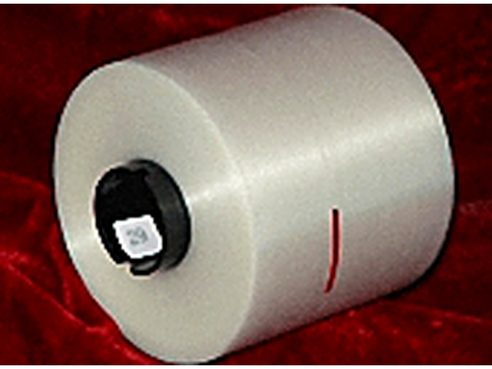

BOPP Straw Film
BOPP STRAW FILM The film is heat sealable film and normally it is used for straw auto-packing, excellent transparent and lower anti-static. Thickness of the film: 15-40 Microns Width: 90-1200MM Length: 3000-9000M Feature: two sides heat sealable and one side heat sealable.

BOPP Straw Film
BOPP STRAW FILM The film is heat sealable film and normally it is used for straw auto-packing, excellent transparent and lower anti-static. Thickness of the film: 15-40 Microns Width: 90-1200MM Length: 3000-9000M Feature: two sides heat sealable and one side heat sealable.
Product highlights
- Converted-ready formats for faster line set-up
- Consistent quality across jumbo, slit and finished rolls
- Tailored widths and core sizes
- Batch-to-batch traceability
Typical applications
- Converted film supply
- Packaging converters
- Print and laminate suppliers
Technical specifications
Key parameters taken from our production data sheet.
Overview
| Width | 90-1200MM |
|---|---|
| Length | 3000-9000M Festure: two sides heat sealable and one side heat sealable |
Product characteristics
| Basic material | Polypropylene (PP) |
|---|---|
| Heat seal | Heat sealable on two sides |
| Feature | Anti-static |
| Application | Converted film supply; Packaging converters; Print and laminate suppliers |
Related products
More references in the same product family.
 BOPP Products
BOPP Products
BOPP Bags
BOPP Bags Thickness: 20 25 26 30 35 microns. Size: A4,10" X 13" (330MM+40MM) or any buyer's nominated sizes. Feature: high super clear/transparent, high super brightness and can print any…
 BOPP Products
BOPP Products
Decorative PP ribbons,Artificial flower,Crepe paper,Decorative mesh
Decorative PP ribbons, Artificial flower, Crepe paper, Decorative mesh 1.) all kinds of plain color ribbons, printed logo color ribbons, rainbow ribbons, flowers ribbons, pull flower…
 BOPP Products
BOPP Products
BOPP Laser Film AND Holographic Film
BOPP LASER FILM AND HOLOGRAPHIC FILM Product Features: Good transparency and high gloss; high Young's modulus, high tensile strength; good low - temperature heat sealability, the sealing…

BOPP ProductsBOPP Tear Tape
BOPP TEAR TAPE 1. General tear tape ----Is widely used in cigarettes, playing cards, pharmaceutical, audio-visual products, such as film packaging products, decoration's packaging and…
Request samples or a quotation
Tell us the grade, thickness and quantity you need and our team will reply with a specification and lead time.